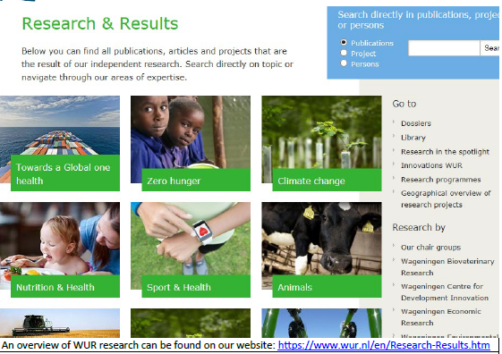
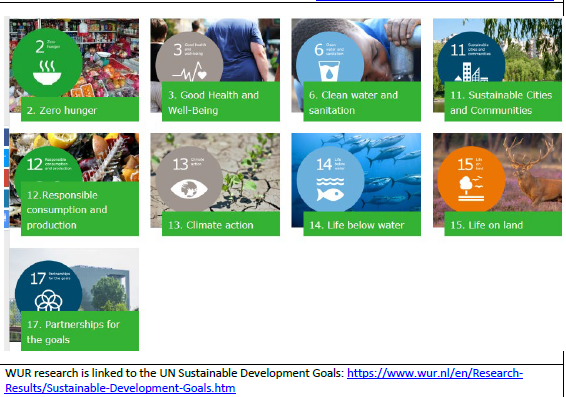
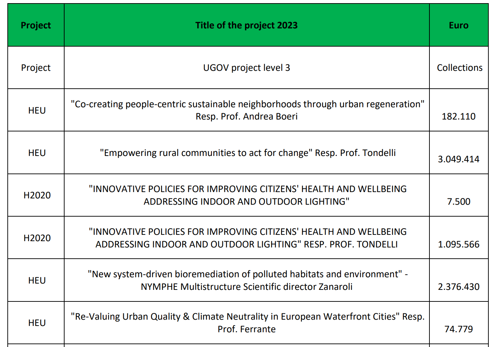

| Example of Sustainability Research Fund (Wageningen University & Research, Netherlands) |
|---|
|
 Sustainability research outcomes database and portal screenshot
|
|
 SDG research alignment and classification matrix
|
| Reference Project Funding & Budget Mapping |
|---|
|
 Project financial mapping showing budget allocations
|
Total research fund dedicated to sustainability research in 2022 = ……... US Dollars
Total research fund dedicated to sustainability research in 2023 = ……... US Dollars
Total research fund dedicated to sustainability research in 2024 = ……... US Dollars
The averaged annum last 3 years of research fund dedicated to sustainability research = ……... US Dollars